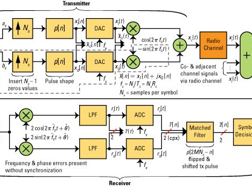

|  |
Análisis de señales - 2020II
Bienvenida al curso
El curso de Análisis de señales es un curso que hace parte de la formación básica de un ingeniero electrónico y de sistemas y telecomunicaciones.
Este curso es fundamento tanto teórico y matemático para cursos posterior de la rama de telecomunicaciones, control y procesamiento digital de señales.
Durante el desarrollo del curso el estudiante estará en capacidad de identificar y clasificar diferentes tipos de sistemas y señales.
El estudiante adquirirá competencias de análisis y síntesis de sistemas lineales e invariantes en el tiempo (LTI) por medio de la implementación de diferentes herramientas matemáticas, tanto en el dominio del tiempo como de la frecuencia.
El curso tendrá énfasis en el diseño y sintetizado de distintos tipos de sistemas electrónicos y de telecomunicación mediante la implementación de herramientas matemáticas de desarrollo.
información del curso
- pre-requisitos: 2000052 - Ecuaciones Diferenciales.
- Usted debe sentirse a gusto leyendo y escribiendo pruebas.
Se asume que sus bases de álgebra, programación y análisis de circuitos eléctricos son optimas. Manejar el paquete matemático Matlab y Simulink.
- créditos: 3 créditos (9 horas individuales de trabajo semanal).
- contacto:
|